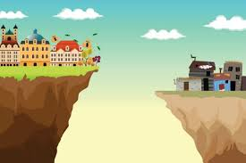

Desigualdad Económica
La desigualdad económica se refiere a la disparidad en la distribución de ingresos y riqueza entre diferentes grupos de personas. Esta desigualdad puede tener efectos negativos en la cohesión social, el crecimiento económico y la estabilidad política.
Para abordar la desigualdad económica, es esencial implementar políticas que promuevan la equidad y la inclusión social. Esto incluye medidas como la redistribución de ingresos, el acceso a la educación y la salud, y la creación de empleo decente.
Estadísticas de Desigualdad Económica
| País | Coeficiente de Gini | Ingreso Medio (USD) |
|---|---|---|
| Sudáfrica | 63.0 | 6,100 |
| Brasil | 53.4 | 9,000 |
| Estados Unidos | 41.4 | 65,000 |
| India | 35.7 | 2,100 |
Fuente: Datos del Banco Mundial
Políticas de Redistribución de Ingresos
Las políticas de redistribución de ingresos son fundamentales para reducir la desigualdad económica. Esto incluye la implementación de impuestos progresivos, transferencias sociales y subsidios para los más necesitados.
Estas políticas deben ser diseñadas de manera que no desincentiven el trabajo y la inversión, sino que promuevan la equidad y la justicia social.
Acceso a Educación y Salud
Garantizar el acceso a una educación de calidad y a servicios de salud es crucial para reducir la desigualdad económica. La educación y la salud son pilares fundamentales para el desarrollo humano y la movilidad social.
Es esencial invertir en infraestructuras educativas y sanitarias, así como en programas que aseguren la igualdad de oportunidades para todos.